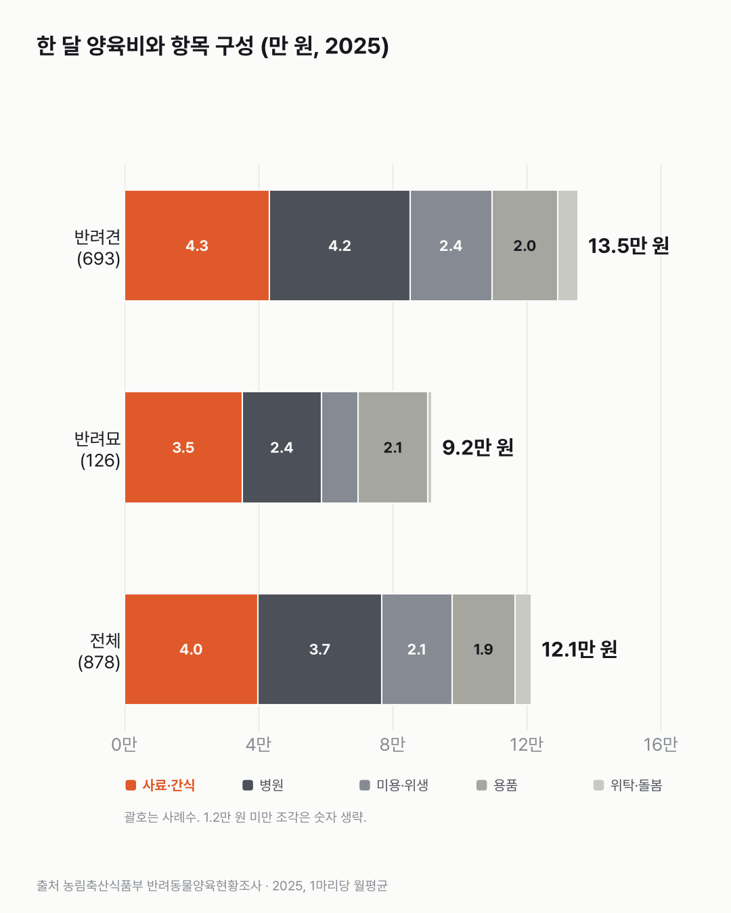
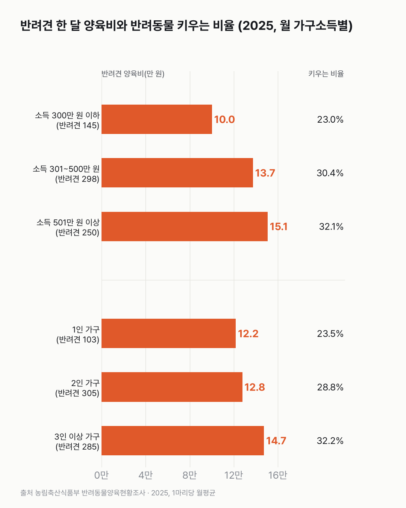

반려동물 한 마리, 한 달에 얼마 들까요
한 마리 키우는 데 한 달 12만 원 남짓 들고, 그중 먹이와 병원비가 가장 커요. 반려견이 반려묘보다 한 달 4만 원 넘게 더 들어요.

- 반려동물 1마리에 드는 돈은 한 달 평균 12.1만 원이에요. 반려견은 13.5만 원, 반려묘는 9.2만 원이에요.
- 가장 큰 항목은 사료·간식(4.0만 원)이고, 병원비(3.7만 원)가 바로 뒤예요.
- 반려동물을 키우는 가구는 29.2%예요. 1인 가구는 23.5%, 3인 이상 가구는 32.2%예요.
동물병원 접수대에서 진료비를 내고, 마트에서 사료 한 포대를 카트에 싣는 장면. 그런 돈이 한 달에 얼마나 되는지 묻는 국가 조사가 이번에 처음 나왔어요. 반려견만 보면 사료·간식(4.3만 원)과 병원비(4.2만 원)가 거의 같아요.
반려견 양육비는 가구소득이 높을수록 많아요. 월 300만 원 이하 10.0만 원, 301~500만 원 13.7만 원, 501만 원 이상 15.1만 원이에요. 가구원이 많을수록도 많아서, 1인 가구는 12.2만 원, 3인 이상 가구는 14.7만 원이에요.
키우는 가구는 29.2%예요. 1인 가구는 23.5%로 3인 이상 가구(32.2%)보다 적어요. 소득 300만 원 이하 가구도 23.0%로 낮아요.

병원비는 매달 나가는 돈이 아니에요. 한 번에 크게 나간 달과 아무것도 안 나간 달을 한 달 평균으로 어떻게 어림해 답했을지, 숫자 뒤의 계산이 궁금해졌어요.
이 숫자는 어디서 왔나요
출처
어떻게 셌나요
- 2025년에 처음 한 조사예요. 인구주택총조사 표본 3,000가구를 방문 면접했어요(보도자료).
- 양육 비율 29.2%는 가구 가운데 반려동물을 키우는 가구의 비율이에요. 개·고양이 말고 물고기·새·설치류 같은 동물도 들어 있어요.
- 양육비는 보도자료 기준 '반려동물 1마리당' 한 달 평균이에요. 통계표 사례수(그 칸에 모인 응답 수, 전체 878)와 보도의 양육 가구 수(867가구)가 달라서, 양육비는 동물 단위로 센 것일 수 있어요.
한계 5가지
이 데이터로 말할 수 없는 것
- 응답자가 답한 월평균이에요. 영수증이나 카드 내역으로 센 게 아니에요. 병원비처럼 가끔 크게 나가는 돈은 한 달 평균으로 답하기 어려워요.
- 반려묘는 사례수가 126이라 소득·가구원수별로는 나눠 보지 않았어요(모두 100 미만).
- 반려견 가구주 20대(14), 30대(70)는 사례수가 적어 나이대 비교는 하지 않았어요.
- 2025년 첫 조사라 다른 민간 조사(예: 월 19만 원)와 방식이 달라 직접 비교하지 않아요.
- 키우라거나 말라는 글이 아니에요. 원인은 말하지 않아요.
새 글 나오면 받아 보기
피드 리더 앱에 이 사이트 주소를 한 번 넣어 두면, 새 글이 올라올 때 앱에 떠요. 가입이나 메일 주소는 필요 없어요.
받는 법 보기
- 피드 리더 앱을 하나 골라요. 새 글을 모아 보여 주는 앱이에요. 예를 들면 Feedly나 Inoreader가 있어요. 둘 다 무료고 웹·휴대폰에서 써요.
- 앱에서 '구독 추가'(+)를 누르고 아래 주소를 붙여 넣어요.
- 끝이에요. 새 글이 올라오면 앱 목록에 떠요.
https://protofu.github.io/opendata-insight/feed.xmlFeedly를 쓴다면 여기를 눌러 바로 추가할 수도 있어요.